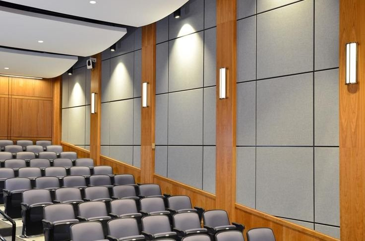
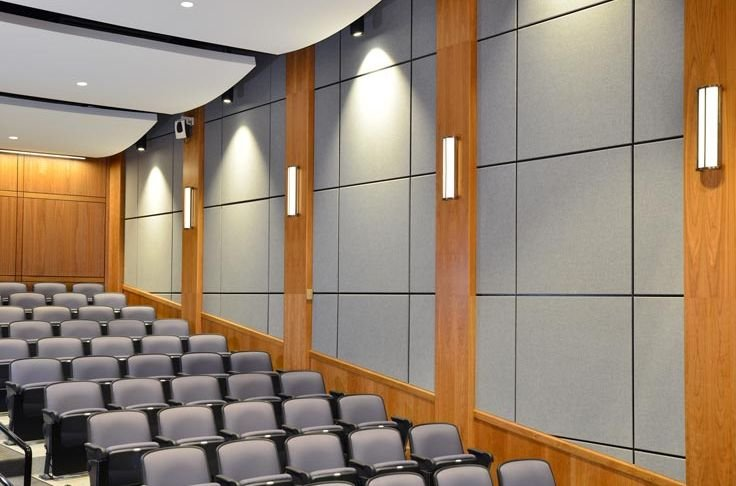

Welcome to SRO Techtex, a leader in the innovative world of technical textiles. With a passion for excellence and a commitment to quality, we have been at the forefront of the textile industry, providing cutting-edge solutions to a diverse range of sectors.
Architects and designers can seamlessly integrate our Build Tech solutions into their projects to achieve cutting-edge designs and superior functionality. Our team collaborates closely with architects to understand their vision and provide customized textile solutions that meet their specific requirements.
Choose technical textiles for their advanced functionality and innovative applications across diverse industries such as medical, automotive, and construction.


 

Urban development involves the planning, growth, and improvement of cities and towns to create sustainable, efficient, and livable environments for residents.
Modernization
Infrastructure
Growth
Read More
At SRO Techtex, our Marine & Offshore Solutions textiles are engineered for superior performance in harsh maritime environments. These high-durability fabrics resist abrasion, UV exposure, water, and salt corrosion, making them ideal for shipbuilding, offshore platforms, and marine equipment. With flame-retardant properties, high tensile strength, and anti-microbial treatments, our textiles ensure safety, longevity, and hygiene. Trust SRO Techtex for innovative, customized, and sustainable textile solutions that meet the rigorous demands of the marine and offshore industries.
Read MoreFreshwater storage systems collect, store, and manage water resources to ensure a reliable supply for drinking, agriculture, and industrial use, particularly in regions prone to drought or water scarcity.
Reservoirs.
Conservation.
Security.
Read MoreAgricultural advancement involves the continuous improvement and adoption of technologies, practices, and policies to enhance productivity, sustainability, and resilience in farming systems, aiming to meet the growing demand for food while minimizing environmental impact.
Innovation.
Sustainability.
Productivity.
Read More
The oil and gas industry needs technical textiles that are extremely fire retardant and durable.
Read Moreagrotech textile refers to innovative agricultural fabrics designed to enhance crop protection, support, and productivity through advanced material technologies.
Read MoreBuildtech textile encompasses technical fabrics used in construction and building applications, providing enhanced durability, strength, and functionality for architectural and infrastructural projects.
Read MoreGeotech textile involves the use of geotextiles in civil engineering and environmental projects, offering solutions for soil stabilization, erosion control, and drainage management.
Read More
Our textiles have many applications for the oil and gas industry, such as fire barriers in various installations, and applications within the areas of seismic operations, oil recovery and flame protection.
Heaven Enclave,Variav, Surat
info@srotechtex.com